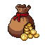
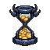

<title>방치 버튼·성급 표시 후보</title>
<link rel="stylesheet" href="https://fonts.googleapis.com/css2?family=Do+Hyeon&family=IBM+Plex+Sans+KR:wght@400;600&display=swap">
<style>
/* 레이아웃: 결정할 것 두 절. 홈 오른쪽 위 모형(실제 UI 그림) 3안 나란히 + 성급 표시 2안. 게임과 같은 밤 색 한 테마 */
:root {
  color-scheme: dark;
  --page: #120c18; --ink: #ece4f2; --muted: #a99bb5; --line: #2f2439;
  --panel: rgb(81, 20, 35); --bone: #efe3c8; --gold: #ffcf4d; --ruby: #ff4a5e;
  --game: 'Do Hyeon', 'Malgun Gothic', sans-serif;
  --body: 'IBM Plex Sans KR', system-ui, sans-serif;
}
body { background: var(--page); color: var(--ink); font: 15px/1.65 var(--body); }
main { max-width: 960px; margin: 0 auto; padding-block: 28px 64px; padding-inline: 16px; display: grid; gap: 40px; }
h1, h2, h3 { font-family: var(--game); font-weight: 400; margin: 0; text-wrap: balance; }
h1 { font-size: 30px; } h2 { font-size: 22px; } h3 { font-size: 18px; }
h3 .rec { font-family: var(--body); font-size: 12px; color: #1c1206; background: var(--gold); padding: 2px 6px; border-radius: 4px; margin-left: 6px; vertical-align: 2px; }
p { margin: 0; max-width: 65ch; }
.lede, .note { color: var(--muted); } .note { font-size: 13px; }
section { display: grid; gap: 14px; }
.opts { display: flex; flex-wrap: wrap; gap: 22px; align-items: flex-start; }
.opt { display: grid; gap: 8px; width: 220px; max-width: 100%; }
.opt.wide { width: 300px; }
.opt p { font-size: 14px; }

/* 홈 오른쪽 위를 실제 크기로 자른 모형 */
.crop { position: relative; width: 220px; height: 260px; overflow: hidden; border: 2px solid var(--line); border-radius: 12px; background: #0c0716 url(bg_night.png) right top / 375px auto; image-rendering: pixelated; font-family: var(--game); color: #f4ecdc; }
.crop .tower { position: absolute; right: 30px; top: 30px; width: 300px; image-rendering: pixelated; }
.col { position: absolute; right: 8px; top: 8px; display: flex; flex-direction: column; align-items: flex-end; gap: 6px; z-index: 2; }
.pill { border: 7px solid transparent; border-image: url(pill.png) 8 fill / 7px stretch; image-rendering: pixelated; padding: 0 4px; display: inline-flex; align-items: center; gap: 3px; font-size: 13px; }
.pill img { width: 20px; height: 20px; image-rendering: pixelated; }
.pill b { color: var(--gold); font-weight: 400; }
.icon-btn { width: 60px; display: grid; justify-items: center; font-size: 13px; text-shadow: 0 1px 0 #000, 0 0 3px #000; }
.icon-btn img { width: 46px; height: 46px; image-rendering: pixelated; filter: drop-shadow(0 0 5px #ffcf4daa); }
.icon-btn b { color: var(--gold); font-weight: 400; font-size: 15px; line-height: 1; }
.icon-btn small { color: #f0dcae; font-size: 11px; }
.icon-btn.empty img { filter: grayscale(.6) brightness(.7); }
.icon-btn.empty b { color: #c9ae9a; }
.old { border: 9px solid transparent; border-image: url(bar.png) 10 fill / 9px stretch; image-rendering: pixelated; color: var(--gold); padding: 0 6px; font-size: 15px; }

/* 성급 */
.row { display: flex; flex-wrap: wrap; gap: 10px; align-items: center; }
.portrait { position: relative; width: 52px; height: 52px; border: 8px solid transparent; border-image: url(frame_sq.png) 10 fill / 8px stretch; image-rendering: pixelated; }
.portrait img { position: absolute; inset: -6px; width: calc(100% + 12px); height: calc(100% + 12px); object-fit: contain; image-rendering: pixelated; }
.portrait.s10 { filter: drop-shadow(0 0 3px var(--gold)); }
.portrait.s20 { filter: drop-shadow(0 0 4px var(--ruby)) drop-shadow(0 0 2px var(--ruby)); }
.badge { position: absolute; right: -10px; bottom: -11px; z-index: 1; display: inline-flex; align-items: center; gap: 1px; font-family: var(--game); font-size: 12px; color: var(--gold); text-shadow: 0 1px 0 #000, 1px 0 0 #000, -1px 0 0 #000, 0 -1px 0 #000; }
.badge img { width: 13px; height: 13px; image-rendering: pixelated; }
.cap { font-size: 12px; color: var(--muted); text-align: center; width: 52px; }
.stage { position: relative; width: 300px; max-width: 100%; height: 130px; border: 2px solid var(--line); border-radius: 12px; background: #1b1430; overflow: hidden; }
.unit { position: absolute; bottom: 22px; display: grid; justify-items: center; }
.unit img { width: 68px; height: 68px; image-rendering: pixelated; transform: scaleX(-1); }
.unit .badge { position: static; margin-top: -8px; }
.floor { position: absolute; left: 0; right: 0; bottom: 0; height: 22px; background: #2a2140; border-top: 2px solid #3a2f58; }
.decide { border: 1px solid var(--gold); border-radius: 6px; padding: 14px 16px; display: grid; gap: 8px; }
.decide h2 { color: var(--gold); font-size: 19px; }
ul { margin: 0; padding-left: 20px; display: grid; gap: 4px; }
</style>
<main>
  <header style="display:grid;gap:8px">
    <h1>방치 버튼·성급 표시 후보</h1>
    <p class="lede">방치 보상을 숫자만 떠 있는 버튼에서 소환처럼 그림 버튼으로 바꾸고, 시즌 패스 아래로 옮깁니다. 각성 별은 지금 강화 창 이름 옆에만 보여서 보강안을 함께 올립니다.</p>
  </header>

  <section>
    <h2>1. 방치 보상 버튼 (패스 아래)</h2>
    <div class="opts">
      <div class="opt">
        <h3>지금</h3>
        <div class="crop">
          <div class="col"><span class="old">+565</span><span class="pill">0/10</span></div>
        </div>
        <p>무엇의 숫자인지 알기 어렵습니다.</p>
      </div>
      <div class="opt">
        <h3>A. 보물상자 <span class="rec">추천</span></h3>
        <div class="crop">
          <div class="col"><span class="pill">0/10</span><span class="icon-btn"><b>+565</b><small>방치 보상</small></span></div>
        </div>
        <p>금화가 넘치는 상자. "쌓인 것을 받는다"가 한눈에 보입니다.</p>
      </div>
      <div class="opt">
        <h3>B. 금화 자루</h3>
        <div class="crop">
          <div class="col"><span class="pill">0/10</span><span class="icon-btn"><b>+565</b><small>방치 보상</small></span></div>
        </div>
        <p>골드 묶음 상품 그림과 비슷해 상점 상품처럼 보일 수 있습니다.</p>
      </div>
      <div class="opt">
        <h3>C. 금화 모래시계</h3>
        <div class="crop">
          <div class="col"><span class="pill">0/10</span><span class="icon-btn"><b>+565</b><small>방치 보상</small></span></div>
        </div>
        <p>"시간이 지나면 쌓인다"는 뜻이 강합니다. 뿔 장식이 게임 분위기와 맞습니다.</p>
      </div>
    </div>
    <div class="opts">
      <div class="opt wide">
        <h3>받을 것이 없을 때</h3>
        <div class="crop" style="width:120px;height:130px"><div class="col"><span class="icon-btn empty"><b>0</b><small>방치 보상</small></span></div></div>
        <p>지금은 0이면 사라집니다. 버튼은 늘 같은 자리에 두고, 0이면 흐리게 보여 줍니다. 쌓이면 소환 아이콘처럼 금빛이 숨 쉽니다. 누르면 지금처럼 바로 받기(광고 1.5배 선택지가 있으면 고르는 창).</p>
      </div>
    </div>
  </section>

  <section>
    <h2>2. 성급(각성 별) 표시</h2>
    <p class="note">지금: 강화 창 이름 옆 "마왕 ★3"만. 승인안에는 초상화 별 표시, 별 10·20 테두리 색이 있었는데 아직 없습니다.</p>
    <div class="opts">
      <div class="opt wide">
        <h3>A. 초상화 별 배지 + 테두리 <span class="rec">추천</span></h3>
        <div class="row">
          <div><div class="portrait"><span class="badge">3</span></div><div class="cap">별 3</div></div>
          <div><div class="portrait s10"><span class="badge">12</span></div><div class="cap">별 10+</div></div>
          <div><div class="portrait s20"><span class="badge">20</span></div><div class="cap">별 20</div></div>
        </div>
        <p>강화·각성·편성 창의 모든 초상화 오른쪽 아래에 별 수. 별 10부터 금빛, 별 20은 루비빛 테두리. 탑 화면은 그대로라 정보가 늘지 않습니다.</p>
      </div>
      <div class="opt wide">
        <h3>B. A + 탑 위 몬스터 발밑</h3>
        <div class="stage">
          <div class="unit" style="left:30px"><span class="badge">3</span></div>
          <div class="unit" style="left:115px"><span class="badge">12</span></div>
          <div class="unit" style="left:200px"><span class="badge">20</span></div>
          <div class="floor"></div>
        </div>
        <p>홈 탑과 공략 전투에서도 별이 보여 다른 사람 성을 털 때 강함이 바로 보입니다. 대신 탑 화면에 숫자가 늘어납니다.</p>
      </div>
    </div>
  </section>

  <section class="decide">
    <h2>정해 주실 것</h2>
    <ul>
      <li>방치 버튼 그림: A 보물상자(추천) / B 금화 자루 / C 금화 모래시계</li>
      <li>성급 표시: A 초상화만(추천) / B 탑·전투까지</li>
    </ul>
  </section>
</main>
